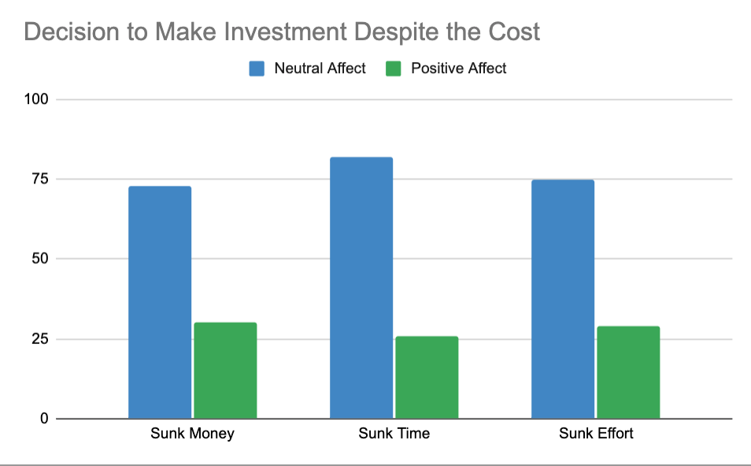

Sunk Costs in Consumer Decision Making¶
Melina Seligman-Tovar & Chelsea Trattner
This chapter will focus on the role of sunk cost in consumer decision making. Sunk cost refers to a cost that has been incurred and cannot be recovered, yet the impacts of this cost extend far beyond its initial interpretation. We will begin our chapter by further defining sunk cost generally. We will then move on to identifying many applications of sunk cost, as the role of sunk cost is prevalent, yet different depending on the context. Sunk cost comes to play in various scenarios, from large purchases, to interpersonal relationships, and both small and major life decisions. We will follow these applications with an explanation of the interpersonal aspect of sunk cost, in which costs can be borne by someone other than the decision-maker. This portion will be based on “The interpersonal sunk-cost effect” paper by Christopher Olivola. We will then delve into sunk cost’s relationship to theories including “foot-in-the-door” and “low-ball” techniques, as well as cognitive dissonance theory. Then, we will examine the rational justification of committing sunk cost fallacy to understand why a decision maker may continue with a failed plan. Next, we will examine a study that focuses on sunk cost and customer brand loyalty to explore another mechanism that may contribute to a customer’s decision to stay or leave a company. The final section of this chapter will provide a mechanism to attenuate the sunk cost effect through positive affect. This will allow us to further elucidate the role of sunk cost as it applies to many social situations and decision making processes, and provide an understanding of how the effect can be mitigated.
What is Sunk Cost?¶
The sunk cost effect can be defined as the tendency of individuals to continue pursuing a certain endeavor once they have made some sort of investment into the endeavor. This investment can take various forms, some of which include money, time, and effort. The investment causes individuals to continue their plan, regardless of whether it is truly beneficial for them. The psychological mechanism of the sunk cost effect stems from the desire to avoid feeling wasteful (Arkes and Blumer, 1985, p. 125). People tend to fixate on their previous investments as opposed to focusing on what will maximize their utility.
The specific investments that create the sunk cost effect should ultimately have no influence on the individual’s decision, as these sunk costs from past investments are irrelevant to future decisions. The costs have already been incurred, and a truly rational decision maker should not feel guilty about or be impacted by any previous costs. The only factors that should influence their decision are those in the immediate foreground or in the future. As we will reveal in the following sections, the maladaptive behavior motivated can have substantial, yet avoidable consequences on decision makers.
We will now delve into a few scenarios of the sunk cost effect in play, to give a better idea of its many forms and outcomes. These examples elucidate the fact that the sunk cost effect can apply to various domains, and thus is a salient behavior to learn about and consider.
Take a girl named Grace who just received tickets to a 4-hour outdoor concert. Now say that Grace convinces her friend to purchase a ticket, at a full $20, in order to accompany Grace to the concert. Both girls are very excited, and greatly looking forward to seeing some of their favorite artists. However, two days before the concert, the girls find out that there will be a huge hail storm throughout the day of the concert. Fortunately, the concert will still happen (attendees are simply advised to bring umbrellas). Grace tells her friend that she will not go, as she doesn’t want to suffer through a concert in a hail storm. Her friend tells her that they must go, since she spent $20 dollars for the ticket. Arkes and Blumer would say that this friend is not acting in a rational manner based on traditional economic theory (Arkes and Blumer, 1985, p.125).
This is because, as previously mentioned, the only aspect that should influence decisions is incremental costs, not sunk costs. The $20 is already a sunk cost that can not be recovered whether the friend attends the concert or not, and thus the money should not influence Grace’s friend’s decision. Rather, the idea of suffering through a 4-hour outdoor hail storm should deter the friend from attending, just as it did for Grace. In this example, the friend ends up going by herself and continues the costly endeavor, as the sunk cost of $20 provided her a strong enough motivation to continue. Grace’s friend sacrificed her happiness and potentially her health for four hours just to make the cost of the ticket not appear wasted.
The irrational influence of sunk cost is evident with a simple fictional example, but it has also been prevalent throughout history. One example identified by Arkes and Blumer (1985) is that of the Tennessee-Tombigbee Waterway Project. A substantial amount of taxpayers’ money was allocated to and spent on the project. However, many of the individuals involved in the project were insisting that it should not be completed. This opposition did not fare well, as the sunk costs of the taxpayers’ money substantially outweighed the criticism of the project. Regardless of the large sum of money in this historical example, sunk costs are not relevant when making current decisions, and should not be considered in the determination of stopping or continuing any endeavor (Arkes and Blumer, 1985, p. 126). Thus if people had determined that the project should not continue, the previous costs involved in the initial aspects of the project should have no impact on the final decision to continue or terminate the project (though other influences could come into play).
One final example that we will consider is that of the sunk cost effect within relationships. Indeed sunk costs take many forms beyond the classic monetary form discussed in the examples above. Take a couple that met their freshman year of high school. They stayed together through all of high school largely because of their bond, but also because of the convenience of seeing each other in their classes, at lunch, in the halls, and on multiple local weekend adventures. The couple comes to their senior year of high school and are both heading to colleges. One of them is going to a college in New York, while the other will be attending a college in LA. The couple knows that they will both be miserable in a long distance relationship. However, they decide to stay together because they have already invested so much time, effort, and money into their relationship. This couple that ultimately knows they should be apart continues their relationship due to the influence of the sunk cost effect.
Interpersonal Sunk Cost¶
The previous examples indicate the ways in which the sunk cost effect can impact the decision makers themselves. However, costs can also be borne by individuals other than the original decision maker. In fact, people often tend to alter their own choices based on other peoples’ past investments. This possibility was outlined in Oliviola’s (2018) study.
The paper contained eight experiments in which two key factors were varied. One was the presence (or size) of the sunk cost, and the second was whether the decision maker themselves or another individual incurred the sunk cost before the decision was made. In one of the experiments, the following imaginary scenario was introduced: The participant was told that they had obtained a 6-month membership to a tennis club that either they had paid for or their friend had paid for. Unfortunately, the participant recently sprained their arm, making playing tennis incredibly painful for them. Participants were told either that their friends had purchased the membership for $900 (sunk cost), or that they had received the membership for free (no sunk cost). They were then asked to indicate whether they would continue to play tennis regardless of the pain or stop playing until the injury improved. Participants also knew that playing would only make their injury worse.
The results of this experiment revealed that individuals who had received the membership from their friend who had purchased it for a high cost were far more likely to go with the uncomfortable option than if their friend had received the membership for free. Despite the knowledge that there was no monetary cost for the individual themselves in either scenario, the presence of the interpersonal sunk cost effect is evident. Sunk cost can be borne by others, beyond the initial person making the investment. This fact can be seen in various contexts and has various implications for decision making.
Sunk Cost Relation to Other Theories¶
The sunk cost effect can be related to various other theories, although there are a few notable differences. The “Psychology of Sunk Cost” paper by Arkes and Blumer (1985) highlights a few of these theories, which will be further discussed below.
The first two theories related to sunk cost are the “foot-in-the-door-technique” and “low-ball technique”. These techniques note that when one starts off with a small request, an individual will be far more likely to comply with a larger request. An example of the low-ball technique would be a student convincing their parent to buy them a gift card for $25, then realizing that the giftcard is only available at a minimum of $50. The initial agreement makes their parent substantially more likely to make the larger purchase. The foot-in-the-door technique is similar, yet it convinces people to follow through with related activities as opposed to the same activity. For example, one could ask someone to sign a petition to support a local Girl Scouts troop, then the individual will be far more likely to agree to place a Girl Scout bumper sticker on their car. These techniques are similar to the sunk cost effect in that prior commitments bear a great influence on future purchases. However, a key difference between the sunk cost effect and the two techniques is that these two techniques focus on compliance as their main dependent measure (Arkes and Blumer, 1985, p. 138), whereas compliance does not usually play a role in the sunk cost effect.
Another theory similar to the sunk cost effect is cognitive dissonance theory. This theory indicates that when an individual expends substantial effort on a task they tend to revalue the task more highly. This means that individuals are more likely to continue spending and allocating effort on a certain task once a large amount of effort has been made. This is very similar to the sunk cost effect. However, cognitive dissonance theory would predict that an individual would enjoy the outcome of their work more than those who did not suffer to achieve the same outcome, while the sunk cost effect often dictates that people will go through with uncomfortable situations when previous investments have been made.
The “foot-in-the-door” and “low-ball” techniques as well as cognitive dissonance theory resemble many similarities to the sunk cost effect. However, there are notable differences between the two that make each theory unique and applicable to different contexts.
Role of Sunk Cost in Decision to Stay or Leave a Subscription Product/Service¶
Sunk cost is a widely studied variable because it is so dynamic. Based on the decision at hand, sunk cost can encompass many factors such as time, money, and effort to varying degrees. The purpose of the following section is to take a deep dive into a few of the mechanisms involved in considering sunk cost with consumer choice. Because much academic research focuses on the impact of invested time and money with sunk costs, we examine two illuminating studies that explore the rational reasons for sunk cost and the impact of customer loyalty on the decision to leave or stay with a company. Due to the immense variety of decisions that we face, we would like to focus specifically on a consumer’s decision to stay or leave a subscription-based service. This service/product can be one of various things: food delivery platform, software-as-a-service (SaaS) platform, music subscription, fitness service, etc. We believe this addresses a gap in current sunk cost and consumer choice literature. Research lacks discussion on the impact of sunk cost on a service that has such a unique temporal element. With subscription services, there is no “completion” to the service. Rather, there is a completion to the allotted time for the subscription, at which the decision maker can decide to continue or terminate the subscription.
A study from Bornstein and Chapman (1995) investigates the rational justifications for a decision maker to commit the sunk cost fallacy. A decision maker commits sunk cost fallacy when they decide to continue a service with a reason based on irrecoverable investments such as time or money (Sunk Cost - Why You Should Ignore Them, n.d.). Bornstein and Chapman conducted a study where participants examined a series of scenarios and then gave a response to either continue the original plan or switch (Bornstein & Chapman, 1995). From the experiments, the authors found that participants had a few rational reasons as to why they decided to continue the original plan. We will now explain these reasons and how they relate to a customer’s decision to stay or leave a subscription service.
Bornstein and Chapman found that a common rational justification was the learn-a-lesson argument. In this argument, we view a decision maker as both a teacher and a learner. The decision maker reasons that they are continuing with a failed plan because they believe it will teach them a lesson to think more critically about their future decisions (Bornstein & Chapman, 1995). The logic is that when sticking with a failed plan, the decision maker is reminded of the consequences of their poor decision (Bornstein & Chapman, 1995). Let’s consider the following example to relate this argument to a subscription service. Bill decided to purchase his local online newspaper’s basic subscription for $3 every month for one year. After one week, he found a state news source he likes much more than the local paper. Instead of purchasing a new subscription to the state paper, he decides to continue with the local paper for the remainder of the month in order to teach himself a lesson. Next time, he promises to be more thorough when investigating other providers before committing to a subscription. If Bill had purchased a subscription to the state news source knowing that the $3 spent were irrecoverable, the lesson he learned may not be as strongly reinforced.
Another reason to continue with a failed service is to appear as a good decision maker. Bornstein and Chapman (1995) found that participants attributed an increased importance for this as the investment of the decision increased. By making the decision to leave a company or switch to another provider, a decision maker can feel as though it is an admission that the initial decision was poorly made. Let’s examine how this rational justification can be seen in a subscription service setting. An IT employee selects a document-signing provider for their company after spending ample time doing their research. Due to the necessity of signing and transferring documents virtually, this was an important decision for the firm. In a few months, the IT employee discovers a superior service to the one they had originally selected. This alternative service will enable the firm to also fax and upload documents into a single portal at the same cost of the original service. Rather than switch to the superior service, the IT employee decides the company will continue with the original one in order to protect their initial decision. Since it is their job to select these tools, the IT employee wants to appear as a good decision maker to those who hired them.
Through the work of Bornstein and Chapman, we can see why decision makers fall subject to the sunk cost fallacy beyond just the consideration of the investment of time and money in the service/product. In this next section, we will dive deeper into the role of sunk cost in consumer choice. In the decision to leave a service, there is another important factor to consider: customer loyalty. A study by Steinman and Jacobs (2015) investigates the relationship between sunk cost and customer-brand loyalty. The experiment assigned 108 students to one of six conditions that focused on sunk cost, consumer-brand relationship, and availability of product alternatives. After the participants read news articles about their brand, they were measured on consumer attitude, brand relationship and behavioral intent (Steinman & Jacobs, 2015). The findings in the study showed that a high sunk cost caused participants to be less likely to leave the brand. Furthermore, when a violation of customer-brand relationship was present, participants with high sunk costs indicated hesitancy to switch to an alternative company (Steinman & Jacobs, 2015). In the case where sunk cost was low, participants who experienced a brand violation were more likely to switch to an alternative in comparison to participants with high sunk cost and an absence of brand violation (Steinman & Jacobs, 2015).
Let’s address these findings in the following example. Consider Stacy who has been a member of a workout app for several months. In addition to various workouts, she also utilizes the meal plan organization feature provided through the app. Stacy sees a news article that expresses a controversial stance regarding the app. Stacy considers her investment in the app too high for her to switch to another workout service. The investment she feels is beyond a monetary one, she feels connected to her instructors, the app stores her favorite meals, and her profile has tracked her fitness journey. However, Stacy reflects that if she had learned this news in the early stages of her experience with the app, she would have switched to another service.
Through exploring the rational justifications of sunk cost and impact of customer-brand relationship, we can see how sunk cost impacts our decision-making process in many ways. There is much more that can be further explored regarding the role of sunk cost in the decision to stay or leave a subscription product/service. These insights are not only useful for decision makers, but also for consumer-focused companies. For a company, understanding sunk cost can help efforts to retain customers, which is critical for growth and revenue. For decision makers, having awareness of sunk costs’ mechanisms can facilitate their decision-making.
Attenuating the Impact of Sunk Cost Using Positive Affect¶
From miniscule daily decisions to vast historical decisions, the sunk cost effect pushes decision makers to follow through with their decisions despite negative consequences. It may seem as if the sunk cost effect can have unavoidable negative impacts in various situations. In part, this is true. Even some of the most efficient and knowledgeable decision makers continue to experience the sunk cost effect in their daily lives. Fortunately, the sunk cost effect can in fact be mitigated through the use of positive affect. The following section will delineate the theoretical background behind the use of positive affect in attenuating the impact of sunk cost. It will then delve into a study that provides evidence for the beneficial possibilities of positive affect as well as a discussion of additional mechanisms.
Theoretical Background of Positive Affect¶
To begin, positive affect has demonstrated various beneficial effects on individuals outside of decision-making. The paper, “Let It Go: Positive Affect Attenuates Sunk Cost Bias by Enhancing Cognitive Flexibility’’ by Kyle Emich and Jin Pyone (2018) highlights the fact that positive affect “cues more diverse and extensive thoughts and associations, creating a more complex and broader context for cognitive activity” (Emich & Pyone, 2018, p. 579). People with positive affect can find common properties between various stimuli and consider the world from multiple perspectives. When individuals foster a positive outlook, they are more likely to perceive the world through a more open and diverse perspective. Research shows that people with positive affect tend to be able to solve problems creatively, as they do not become fixated on their initial solution. Evidently, there are many benefits associated with a positive affect that can be applied to creativity as well as one’s general outlook of the world.
All of the beneficial impacts of positive affect can translate to improvements in decision making. In fact, those with a positive affect have an increased “attention to disparate stimuli related to a focal problem and ability to appropriately weigh the applicability of that information” (Emich and Pyone, 2018, p. 580). With this ability, their integration of information becomes far more efficient. In fact, Emich and Pyone (2018) note that people with positive affect perform better on Duncker’s Candle task, which requires participants to overcome functional fixedness. The sunk cost effect is rooted in the fact that individuals do not properly weigh the benefits and detriments of a decision once they have made a prior investment in the decision. Evidently, positive affect can provide a natural way of avoiding sunk cost effect by enhancing cognitive flexibility and enforcing a focus on relevant factors. Positive affect allows people to view decisions from multiple perspectives leading to more informed and beneficial decisions, as people become less fixated on previous investments. In this way, individuals can determine what the best course of action would be based on a focused understanding of the relevant factors involved, as opposed to becoming fixated on the previous costs incurred.
Experiments Displaying Impact of Positive Affect on Sunk Cost Bias¶
The sunk cost effect can be mitigated through the use of positive affect. An individual’s positive affect refers to their tendency to experience the world around them through a positive perspective. Meanwhile, those with a neutral affect are not swayed by a positive perspective or preference, and their future decisions are more likely to be influenced by previous time and money investments (Emich & Pyone, 2018, p. 583). The beneficial use of positive affect is suggested by two experiments delineated in the Emich and Pyone (2018) paper that display the sunk cost effect on time and money, as well as the influence of positive affect on the sunk cost effect. The results of the experiments elucidate the drastic impact that an individual’s affect can have on their decisions.
The first experiment in the paper focused on a scenario that involved sunk money. The experiment was based on a questionnaire adapted from the Arkes and Blumer (1985) paper on sunk cost, which was referenced earlier. In the experiment, 150 participants from an introductory business class were shown one of two video clips, Penguin Olympics or Sticks (Emich & Pyone, 2018, p. 581). The first clip was meant to induce a positive affect, while the second option was meant to induce a neutral affect. An index measure was created in order to assess the state of the participants’ affective state before proceeding. The students were then asked to make a decision involving an investment regarding an airplane project. They were provided the following scenario:
As the president of an airline company, you have invested 10 million dollars of the company’s money into a research project. The purpose was to build a plane that would not be detected by conventional radar, in other words,a radar-blank plane. When the project is 90% completed, another firm begins marketing a plane that can not be detected by radar. Also, it is apparent that their plane is much faster and far more economical than the plane your company is building. The question is: should you invest the last 10% of the research funds to finish your radar-blank plane?” (Emich & Pyone, 2018, p. 582).
The participants’ responses were then recorded. In order to measure each participant’s positive affect, the researchers conducted a logistic regression in which participants’ decisions to invest were regressed onto their “affect condition, sunk cost involvement, and the interaction between the two” (Emich & Pyone, 2018, p. 582). The results showed that those in the positive affect condition tended not to recommit to the project, while those not in the positive affect condition were 73% more willing to commit to the project despite the evident drawbacks.
This impact of positive affect on decision making is additionally shown in studies involving sunk time and sunk effort, proving that positive affect can have a beneficial impact across various contexts.
Figure 1 displays the responses from the students who decided to commit to the investment in each experiment, separating them by the affect condition they were in. The high blue bars indicate the substantially higher likelihood for individuals to invest in a decision when they do not foster a positive affect. Without a positive affect, these individuals are far more likely to fall prey to the sunk cost effect. Those in the positive affect condition, displayed with the green bars, show a much lower likelihood to make the investments despite sunk money, time, or effort. The impact of a positive affect varies only slightly across the three different experiments.
 Figure 1. This chart shows people’s decisions to follow through with a decision or investment due to the sunk cost effect, which is mitigated in the positive affect condition (in green).
Conclusion¶
The sunk cost effect is evident in various studies and across various fictional, historical, and routine scenarios. The sunk cost effect causes individuals to follow through with decisions despite the knowledge that the decision might not be beneficial, simply because there was already an investment of time, money, or effort, as well as many other factors. Our research aims to contribute to the information surrounding the impact of sunk cost on a customer’s decision to leave a subscription based service. We hope to provide interesting insights into how the mechanisms underlying sunk costs are present in the many services we use. The implications of the sunk cost effect can be substantial, however, positive affect can be used to combat it. Employing positive affect allows individuals to see their decisions through multiple perspectives, and weigh their decisions in a less fixated manner. Through reading this chapter, one can understand the definition of the sunk cost effect, its application in multiple domains, and the ways in which its impact can be mitigated.
References¶
Arkes, Hal R, and Catherine Blumer. “The Psychology of Sunk Cost.” Organizational Behavior and Human Decision Processes, vol. 35, no. 1, 1985, doi:10.1016/0749-5978(85)90049-4.
Bornstein, B. H., & Chapman, G. B. (1995). Learning lessons from sunk costs. Journal of Experimental Psychology: Applied, 1(4), 251-269. doi:10.1037/1076-898x.1.4.251
Emich, Kyle J., and Jin Seok Pyone. “Let It Go: Positive Affect Attenuates Sunk Cost Bias by Enhancing Cognitive Flexibility.” Journal of Consumer Psychology, vol. 28, no. 4, 2018, doi:10.1002/jcpy.1030.
Olivola, Christopher Y. “The Interpersonal Sunk-Cost Effect.” Psychological Science, vol. 29, no. 7, 2018, doi:10.1177/0956797617752641.
Steinman, R., Dr, & Jacobs, E. (2015). Sunk Cost Effects on Consumer Choice. Sunk Cost Effects on Consumer Choice, 4, 11th ser., 25-30.
Sunk cost - why you should ignore them (the sunk cost fallacy). (2021, February 03). Retrieved May 24, 2021, from https://corporatefinanceinstitute.com/resources/knowledge/economics/sunk-cost/#:~:text=The sunk cost fallacy reasoning states that further,when deciding whether to continue with the activity.